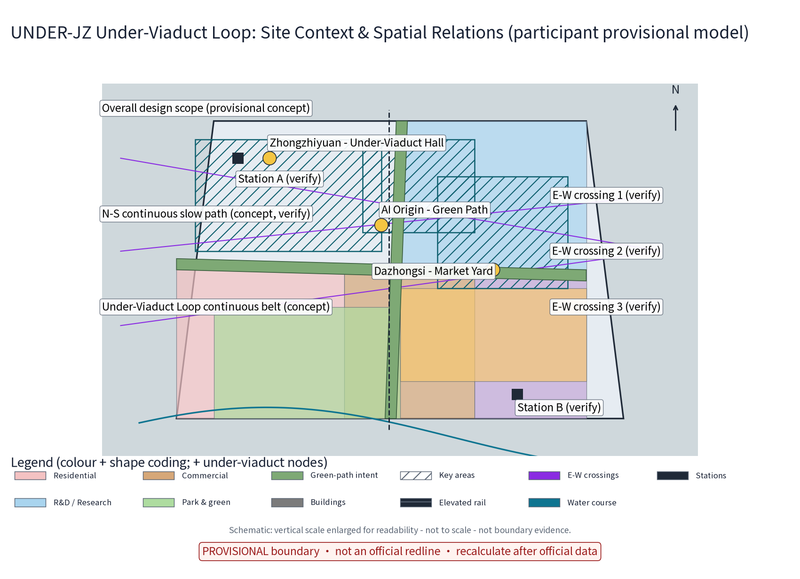
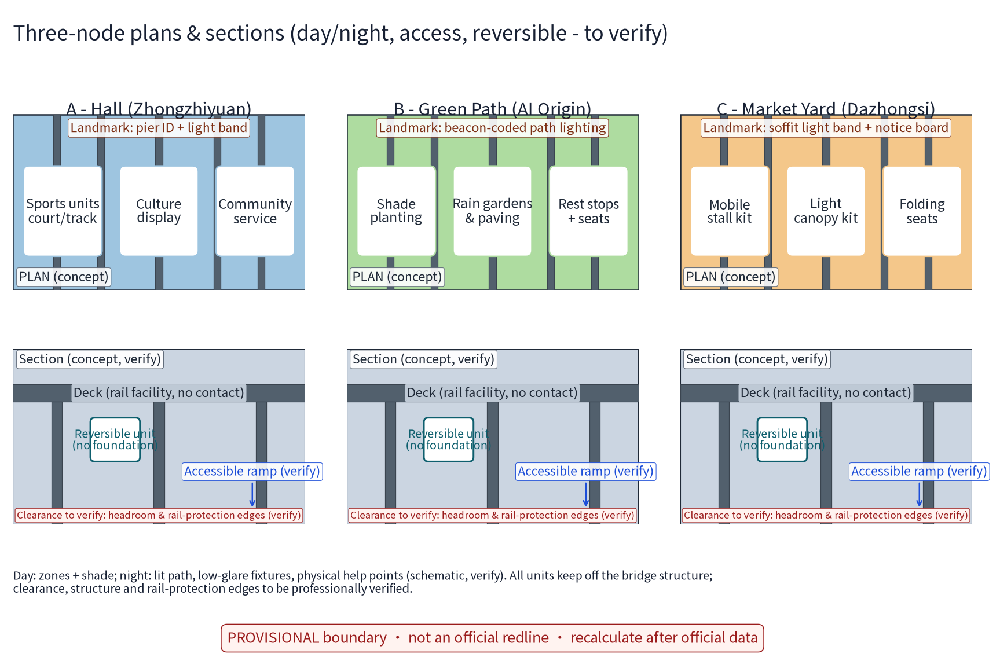
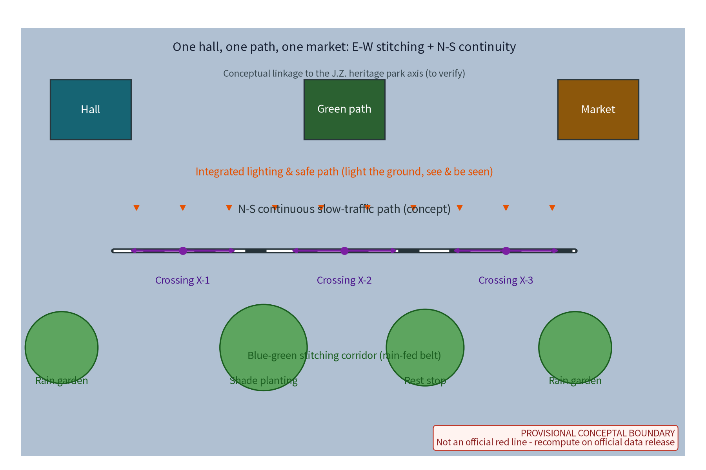

Overview map

Core metrics
Display precision: provisional values shown at reduced precision only; full machine caliber in metrics.json; recompute on official data release.
Three-level scope
| Level | Official caliber and sub-scope |
|---|---|
| Coordinated research area | approx. 43.6 km2 (announcement text caliber, not officially issued) |
| Overall design area | approx. 11.4 km2 (announcement text caliber, not officially issued; package site_boundary is the provisional substitute) |
| Key areas | approx. 368.4 ha (announcement text caliber, not officially issued) |
| Package sub-scope | conceptual under-viaduct segment intents inside the overall design scope (provisional geometry) |
Key areas


Land-use zones
| Land-use class (national 2nd-level code) | Ratio (provisional) | Metric anchor (metrics.json) |
|---|---|---|
| 0701 Residential | 11.3% | 0.113 |
| 0802 R&D / Research | 26.8% | 0.268 |
| 0803 Culture | 8.1% | 0.081 |
| 0804 Education | 2.4% | 0.024 |
| 0805 Sports | 4.4% | 0.044 |
| 0901 Commercial | 15.7% | 0.157 |
| 0902 Business / Office | 9.1% | 0.091 |
| 1401 Park & Green Space | 22.1% | 0.221 |
Caliber and formula: ratio = class area sum / site_boundary area (EPSG:4548, aggregated from package land_use.geojson, national second-level codes); confidence low; recompute trigger = official geometry release. This is the single package-wide caliber, matching proposal.md, figures, PDFs and metrics.json.
Mobility
Blue-green public space
Free access, time sharing, co-governance charter and annual evaluation disclosure; legends use colour + shape double encoding; accessibility info in large-print/voice/paper channels (verification items in the narrative).
Buildings
Under-viaduct functions are reversible envelopes with no building-intensity judgement; no area or height conclusions (existing buildings schematic in the overview map).
AI scenarios
| ID | Scenario card | Baseline (anonymised + human review + stop conditions) |
|---|---|---|
| A1 | Safety monitoring AI | anonymised aggregation + human review; no individual identification |
| A2 | Space booking AI | time-shared booking + staff confirmation |
| A3 | Lighting-saving AI | crowd-triggered advice; timed baseline kept |
| A4 | Event matching AI | aggregation & drafts; operator review before publishing |
| A5 | Noise control AI | time-slot aggregation; advisory only, no enforcement |
| A6 | Parking & transfer guidance AI | public info aggregation (concept) |
| A7 | Market operations assistant AI | public dashboard & ledger drafts; human reconciliation |
| A8 | Facility repair reporting AI | repair triage drafts; human confirmation |
| A9 | Accessibility & age-friendly info AI | large-print/voice bilingual info; human fallback |
| A10 | Event capacity advisory AI | capacity trend aggregation; advisory only |
Industry test protocols (3):
- B1 Safety-monitoring AI evaluation：hypothesis -> anonymised data contract -> manual-patrol baseline -> error-rate evaluation -> annual disclosure
- B2 Lighting-saving AI A/B test：crowd-trigger vs scheduled baseline -> energy & brightness monitoring -> safe-brightness floor -> public report
- B3 Noise aggregation & slot matching：time-slot noise aggregation -> on-site records baseline -> data contract -> stop on dispute
Renewal projects
Three project categories (activation/stitching/governance) + 3 annual programme brands + developer community and open operation (concept).
Task coverage
| Task | Package response |
|---|---|
| agent.1 Belt concept and function coordination | three-level scope framework + one-loop three-node structure |
| agent.2 AI full-stack innovation ecosystem | AI ecosystem map + 6 global cases (public-channel mechanism summaries) |
| agent.3 AI+ scenario empowerment | 10 scenario cards (A1-A10) + 3 industry tests (B1-B3) |
| agent.4 AI public space and pilgrimage landmarks | 3 landmarks + honour display + reversible component library |
| agent.5 Cultural fusion narrative | Under-Viaduct Loop narrative + bilingual brand copy (internal codename) |
| agent.6 Event system and long-term operation | 3 annual programmes + developer community + open operation pathway |
Sources
- Pre-qualification announcement (Beijing Municipal Planning & Natural Resources Commission, Haidian Branch, 2026-05-09)
- Agent taskbook excerpt (cleared document, 2026-05-18)
- Urban Design Management Measures (MOHURD, 2017)
- Regulatory Detailed Planning Compilation and Approval Measures (MOHURD)
- Land and Sea Classification Guide (MNR, 2023-11)
- Provisional rough polygons (repository-maintained, provisional)
- Interim Measures for Generative AI Services (2023-07)
- Case: Shanghai Suzhou Creek under-bridge renewal (xinhuanet.com and others, 2025-07)
- Case: Tokyo Nakameguro Koukashita (official facility site, opened 2016-11)
- Case: Tokyo mAAch ecute (official facility site, since 2013)
- Case: Seoul under-viaduct public space (Seoul Metropolitan Government, 2025-08)
- Case: NYC High Line (thehighline.org)
- Case: Toronto The Bentway (thebentway.ca, since 2018)
- Font: Noto Sans SC (SIL OFL 1.1)
- Package self-generated geometry/figures/drawings (PACKAGE-GEOMETRY / PACKAGE-FIGURES-PDFS)
Assumptions
- No official boundary or key-area polygons are published; all geometry provisional (A-BOUNDARY-001)
- Bridge, rail-protection, statutory conditions unknown; concept-level only (A-CONTROLS-001)
- No structural modification, load or feasibility conclusions (A-STRUCTURE-001)
- No unverified area or event figures are cited (A-DATA-001)
- Anonymised aggregation only; no individual-identifying tracking (A-PRIVACY-001)
- AI-generated copy requires human review (A-CONTENT-001)
- Brand prior rights unsearched; names/marks are internal working codenames (A-TRADEMARK-001)
- Single land-use caliber aggregated from package geometry; recompute on official release (A-LANDUSE-001)
Self-check status
Four-gate self-check: deterministic / spatial / visual packaging / professional evidence - all PASS (see self_check.json)